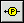

Use the Probe tool to check intermediate values on a wire as a VI runs. Use the Probe tool if you have a complicated block diagram with a series of operations, any one of which might return incorrect data. Use the Probe tool with execution highlighting, single-stepping, and breakpoints to determine if and where data is incorrect. If data is available, the probe immediately updates and displays the data during execution highlighting, single-stepping, or when you pause at a breakpoint. When execution pauses at a node because of single-stepping or a breakpoint, you also can probe the wire that just executed to see the value that flowed through that wire.
Complete the following steps to use the Probe tool .
(Optional) If you want a probe to display the data that flowed through the wire at the last VI execution, use the Retain Wire Values option on the block diagram.
Right-click a wire and select Probe from the shortcut menu or select Custom Probe and a probe from the shortcut menu. If you have not yet selected a supplied probe or created a custom probe, LabVIEW searches the labview\vi.lib\_probes\default and the labview\user.lib\_probes\default directory and finds a probe that matches the data type of the wire you right-clicked. After you select a custom or default probe, it becomes the default probe for that data type.
The Probe Watch Window appears. LabVIEW automatically lists and numbers the probe in the Probe Watch Window and displays the same number in a glyph on the wire you clicked.
You also can use the Probe tool to click a wire or select View»Probe Watch Window to display the Probe Watch Window.
(Optional) Place more probes on other wires and objects in the VI where you expect the data to change. Move the Probe Watch Window out of the way if necessary.
Run the VI. The subpanel on the right side of the Probe Watch Window displays data passed along the wire. Select the probe with the data you want to see in the subpanel. You can open the probe in a separate Probe window by right-clicking the probe in the Probe Watch Window and selecting Open Window from the shortcut menu. You also can select the probe and click the Open Separate Probe Window button on the Probe Watch Window toolbar.
(Optional) To locate the subpanel or window that shows the value of the probed wire from the block diagram, right-click the wire associated with the probe and select Find Probe from the shortcut menu. A red border highlights the subpanel or Probe window.
Compare the data that appears in the subpanel or Probe window to what you expected.
To close a probe, right-click the probe or the VI the probe belongs to in the Probe Watch Window and select Remove from the shortcut menu. You also can select the probe in the Probe Watch Window and click the Remove Selected Probes button on the Probe Watch Window toolbar. You can select more than one probe or select the VI the probes belong to in order to remove all probes in that VI.
All probes close automatically when you close the Probe Watch Window or the block diagram.
You cannot use the Probe Watch Window to change data. The probe has no effect on the way a VI runs, aside from custom probes optionally acting as breakpoints.
Note If you want to provide help to users about how to use the custom probe, do not place a Help button on the probe because LabVIEW only executes probes when data flows through the wire. Instead, you can provide help by adding text to the front panel of the probe or by adding description and tip information to each front panel control. To provide help for the entire probe, consider placing the controls on a tab control or in a cluster and adding description and tip information for the tab control or cluster.
The following three options are available on the shortcut menu that appears when you right-click the data in the Probe Display subpanel of the Probe Watch Window or a Probe window.
Reinitialize to Default Value—Resets the value the Probe window displays to its default value.
Copy Data—Copies the data for pasting to other controls in the same VI or in other VIs. This option is also available on the shortcut menu that appears when you right-click a probe listed in the Probe Watch Window.
Find Wire—Finds the associated wire. LabVIEW brings the block diagram that contains that wire to the front and highlights the wire. This option is also available on the shortcut menu that appears when you right-click a probe listed in the Probe Watch Window.